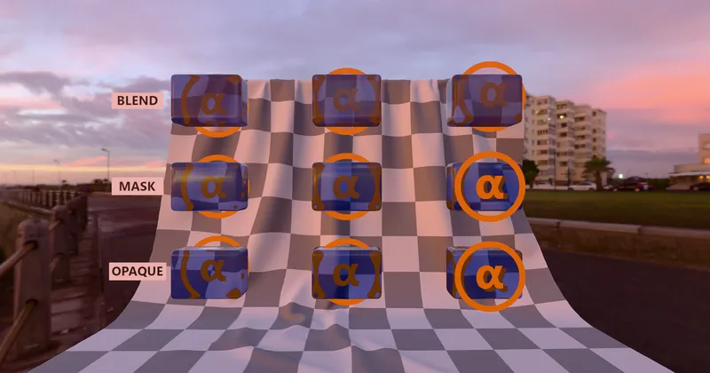

GLTF > GLTF Extensions > KHR_materials_transmission
Transmission Order Test - RedGPU WebGPU Example
Tests depth sorting order across overlapping transmissive objects.
다중 투과(Transmission) 및 반투명 객체 중첩 시의 정렬 순서를 검증합니다.

GLTF > GLTF Extensions > KHR_materials_transmission
Tests depth sorting order across overlapping transmissive objects.
다중 투과(Transmission) 및 반투명 객체 중첩 시의 정렬 순서를 검증합니다.
